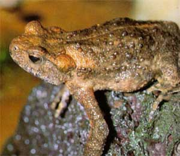

<body text="#000000" bgcolor="#FFFFFF" background="bg311.gif">

ЖАБА МОНГОЛЬСКАЯ (Bufo raddei) Обитает в степном и лесостепном Предбайкалье и Забайкалье и на юге Дальнего Востока. Она отличается от зеленой жабы светлой полосой на спине, менее бугристой кожей и присутствием на голени большой железы. Монгольская жаба не распространяется так далеко на север, как зеленая. За пределами нашей страны она обитает в степях и пустынях Центральной Азии. Высоко поднимается в горы. В Гобийском Алтае, например, она найдена на высоте 3800 м.